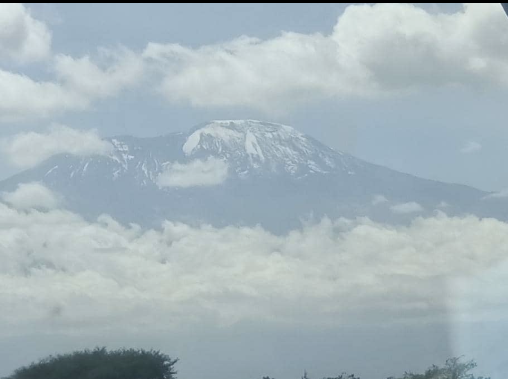

TANZANIA, THE MAGICAL LAND OF CULTURE AND WILDLIFE!
I never knew of a morning in Africa when I woke up that I was not
happy.
Ernest Hemingways.
I never knew of a morning in Africa when I woke up that I was not
happy.
Ernest Hemingways.
Tanzania, a jewel of Africa, lies in the eastern part of the African continent. Its a magical place were you will meet some of the most wonderful, friendly and down to earth local people in this world and you will encounter some of the most prolific wildlife and breath taking scenery in this planet. If that doesnt impress you, then keep on reading and lets see if you change your mind by the time you get to the end of this page...!
Like: | Save for later:Tanzania is home to the famous Maasai Tribe. A semi nomadic pastoral tribe that to this day and age, moves around the land with their livestock in search of fresh pasture and water. You will not miss them as they dont dress up like me and you! Their traditional bright red garments with distinct checked pattern marks are rolled over their bodies and tightened by a belt around the waist (or a dark purple garment for the women) set them apart from the other folks around them. The tribe is found in the Northern part of Tanzania which also happens to be home to some of the most breath taking and wilidlife reach areas found anywhere in the world! You will also not miss their distinct round huts which they call Bomas. These are temporary shelters created out of a mix of mud and cow dung for the walls, sticks for the structure and grass for the thatched roof. If you want to get a glimpse of life inside a Maasai Boma, then be sure to stop by one. You will get a hands on experience of what it is living like a Maasai.
 If you are still not convinced, dont worry, i've still got more gems to share with you! As the heading suggests, Tanzania is also home to the highest mountain in Africa and the worlds highest free standing mountain, the majestic Mount Kilimajaro. Rising to a staggering 5,895m above sea level its a sight to behold when you set your gaze upon it for the first time! Mountain climbers from all over the world try and conquer its peak every year, if you are up for a challenge then you need to look no further then try to conquer it yourself on your next trip.
If you are a fan of wildlife documentaries then you will have most
definitely heard about the great endless plains of the
Serengeti.It is home to the world's largest annual migration of
wild animals where over a million wildebeest,Zebras and other
antelopes traverse south to North and vice versa through the vast
expansive plains in search of fresh grass and water.It is a
journey that the herds undertake inorder to survive,but along the
journey,the herds face all kinds of dangers from predators lying
in wait for the herds to arrive and for the feast to begin.It is a
must see natural spectacle.
Measuring an area of 260 square kilometres and extending about 20km in diameter, the crater is actually a huge caldera of a volcano that collapsed to a depth of 610m about three million years ago. Over the course of time, streams of water made their way down the crater to form little ponds, and vegetation developed all over, attracting a wide range of wild animals. The crater is host to over 25,000 animals including populations of large mammals such as elephants, buffaloes, elands, wildebeests, zebras, gazelles, hippos, and rhinos, as well as such carnivores as lions, hyenas, jackals, and cheetahs. Ngorongoro Conservation Area
Like: | Save for later:The Olduvai Gorge or Oldupai Gorge in Tanzania is one of the most important paleoanthropological localities in the world; the many sites exposed by the gorge have proven invaluable in furthering understanding of early human evolution. Wikipedia
Like: | Save for later:The Tanzanite gemstone is a rare precious gemstone that is only found in Tanzania. It has a blue and violet color and makes for exquisite rings , earings and necklaces. Be sure to grab one as a souvenir at the end of your trip, and what a grand way to end the trip!
Like: | Save for later: